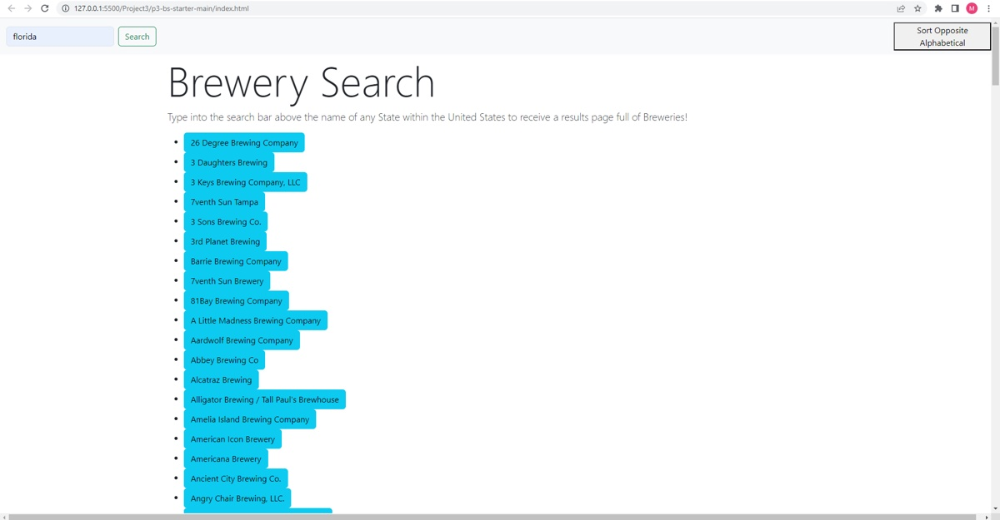

1. Our project can be found at https://benspencer22.github.io/
2. Our program can also be downloaded at https://github.com/benspencer22/benspencer22.github.io
3. Our app allows for any user to type in a state and then every brewery in the state will be shown to the user.
4. Our site is deployed through github.io.
5. The font and seach bar scaled and fixes on to different sides of the screen based on how big or small the screen gets.
6. The API's we used were https://api.openbrewerydb.org/v1/breweries and http://ZiptasticAPI.com
7. You can use the search bar at the top to search for a state and then the breweries in that state will be shown.
8. The results displayed are the breweries in the state.
9. The results are all filtered by state and location.
